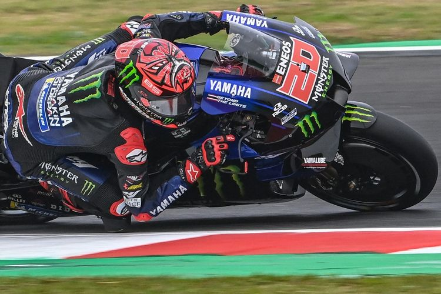
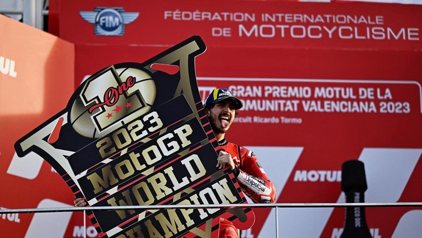

Joan Mir memenangkan gelar juara MotoGP World Championship pada tahun 2020, menunjukkan keahliannya yang luar biasa
dan determinasinya dalam menghadapi kompetisi yang sengit. Dengan gaya balap yang cerdas dan strategi yang baik,
Joan Mir berhasil mencapai puncak kejayaan di musim tersebut. Piala juara yang dipegangnya dengan bangga
adalah simbol kemenangan yang menyertai momen epik dalam karirnya.
Kejuaraan Dunia MotoGP FIM 2020 merupakan kelas utama dari F.I.M. Musim Kejuaraan Dunia Balap Jalan. Joan Mir (foto tahun 2021) adalah Juara MotoGP 2020.
Musim ini ditandai dengan dampak pandemi COVID-19, absennya favorit juara abadi Marc Márquez karena cedera lengan yang serius, tingginya jumlah kemenangan dari pebalap, tim dan konstruktor yang berbeda, dan kontroversi mesin Yamaha.
Joan Mir mengamankan gelar perdananya di MotoGP dan Tim Suzuki Ecstar mengamankan gelar juara tim pertama dan satu-satunya di putaran kedua terakhir. Gelar juara Mir merupakan yang pertama bagi pebalap Suzuki sejak tahun 2000. Mir merebut gelar dengan unggul 13 poin atas Franco Morbidelli.
Ducati memenangkan kejuaraan konstruktor menyusul pengurangan 50 poin untuk Yamaha, meski tidak memiliki pebalap di tiga besar kejuaraan.

FABIO QUARTARARO 2021 MotoGP World Championship
Kejuaraan Dunia MotoGP FIM 2021 merupakan kelas utama dari F.I.M. Musim Kejuaraan Dunia Balap Jalan. Fabio Quartararo meraih gelar dunia pertamanya, dengan lima kemenangan balapan jelang mengamankan gelar di balapan ketiga terakhir musim ini.
Quartararo menjadi orang Prancis pertama yang memenangkan gelar kelas utama, yang juga merupakan gelar pertama bagi pebalap non-Spanyol sejak pembalap Australia Casey Stoner pada tahun 2011.
Musim ini juga menyaksikan Francesco Bagnaia dan Jorge Martín memenangkan balapan kelas utama pertama mereka. Di klasemen keseluruhan, Bagnaia mengamankan tempat kedua dan juara bertahan Joan Mir mengamankan tempat ketiga, sementara Martín dinobatkan sebagai rookie terbaik tahun ini. Ducati mengamankan kejuaraan konstruktor untuk musim kedua berturut-turut dan kejuaraan tim untuk pertama kalinya sejak 2007. Secara total, delapan pembalap berbeda memenangkan Grand Prix sepanjang musim tersebut. Fabio Quartararo (gambar tahun 2022) adalah Juara Dunia Pembalap MotoGP 2021. Francesco Bagnaia menjadi runner-up pada tahun pertamanya bersama Tim Ducati Lenovo. Joan Mir, sang juara bertahan, finis ketiga. Valentino Rossi pensiun pada akhir musim setelah berkarir selama 26 tahun. Juara MotoGP enam kali Marc Márquez kembali pada balapan ketiga tahun ini setelah cedera lengan dan bahu yang membuatnya absen pada musim 2020. Setelah awalnya berjuang dengan cederanya, mantan juara itu memenangkan tiga balapan sejak musim panas dan seterusnya. Itu juga merupakan musim terakhir peraih gelar MotoGP tujuh kali Valentino Rossi setelah 22 musim di kelas premier, sekaligus musim terakhir di mana debutan era 500cc berpartisipasi di kelas premier.
FRANCESCO BAGNAIA 2022 MotoGP World Championship
Pembalap Ducati Francesco Bagnaia merebut gelar juara dunia MotoGP perdananya setelah finis pada posisi ke-9 atau P9 pada balapan pamungkas di Grand Prix Valencia, Minggu, 6 November 2022. Bagnaia hanya membutuhkan tiga poin saja atau cukup finis di posisi 14 besar di Valencia untuk mengunci gelar juara.
Pasalnya, Fabio Quartararo yang merupakan pesaing terdekatnya berjarak 23 poin pada balapan penutup musim tersebut. Quartararo yang wajib menang ternyata hanya mampu finis P4 dan harus merelakan gelar juara dunia kelas premier musim ini jatuh ke Bagnaia.
Bagnaia menjadi pembalap tertua yang meraih gelar juara dunia MotoGP perdananya sejak kategori baru kelas premier itu diperkenalkan pada 2002. Ia menjadi juara MotoGP 2022 di usia 25 tahun dan 282 hari atau lebih tua dari juara dunia MotoGP 2002 Nicky Hayden yang menginjak usia 25 tahun 91 hari.
Bagnaia menjadi pembalap pertama Italia yang meraih gelar juara dunia setelah Valentino Rossi pada 2009. Statistik MotoGP mencatat ia menjadi pembalap ketujuh dari Italia yang meraih kesuksesan pada kejuaraan dunia bersama. Juara lainnya ialah Giacomo Agostini (8 gelar), Valentino Rossi (7), Umberto Masetti (2), Libero Liberati (1), Marco Lucchinelli (1), dan Franco Uncini (1).
Gelar Bagnaia musim ini merupakan gelar kelas premier ke-21 untuk Italia dan ke-80 bagi negara itu dalam kejuaraan balap grand prix. Ia juga menjadi pembalap kedua Ducati yang meraih gelar juara dunia setelah Casey Stoner pada 2007.
Lebih lanjut, Bagnaia menjadi orang Italia pertama yang meraih kesuksesan pada kelas premier dengan mengendarai motor asal Italia. Sebelumnya ada legenda MotoGP Giacomo Agostini yang berjaya pada 1972 bersama MV Agusta.
Pada GP San Marino 2022, Bagnaia meraih empat kemenangan beruntun, menjadi pembalap pertama Ducati yang mencapai hal itu di kelas manapun. Sejak bergulirnya MotoGP pada 2002, pembalap kelahiran Torino, 14 Januari 1997 ini mencatatkan namanya sebagai salah satu pembalap yang meraih empat atau lebih kemenangan beruntun di kelas premier setelah Valentino Rossi, Jorge Lorenzo, dan Marc Marquez.
Total ia sudah meraih 10 kemenangan di kelas premier yang seluruhnya diraih bersama Ducati. Bagnaia menempati peringkat tiga dalam daftar pembalap Ducati yang meraih kemenangan terbanyak setelah Casey Stoner (23) dan Andrea Dovizioso (14).
Dengan 19 kali finis merebut posisi podium, Bagnaia berada di peringkat lima pembalap Ducati yang terbanyak. Sebelumnya ada Jack Miller (21 podium) dan Casey Stoner yang masih menjadi pembalap tersukses Ducati dengan 42 podium.
Bagnaia pada musim ini juga paling banyak naik podium dibandingkan para pembalap lain, yaitu mengemas sembilan kali, termasuk enam kemenangan. Hanya ada tiga pembalap Ducati yang pernah meraih enam kemenangan dalam satu musim. Mereka adalah Casey Stoner (10 kali pada 2007 dan 6 kali pada 2008) dan Andrea Dovizioso (6 kali pada 2017).
Setelah MotoGP Jerman, Francesco Bagnaia terpuruk di peringkat enam klasemen dengan selisih 91 poin dari pemuncak Fabio Quartararo. Namun, ia bisa membalikkan keadaan dan menggeser rivalnya.

FRANCESCO BAGNAIA 2023 MotoGP World Championship
Francesco Bagnaia mengalahkan Jorge Martin dalam perebutan titel juara dunia MotoGP 2023. Bagnaia menunjuk kesuksesannya di balapan utama menjadi kuncinya.
Pebalap Ducati itu berhasil mempertahankan mahkota juara dunianya setelah Jorge Martin jatuh di balapan penentu di Valencia. Bagnaia menyudahi musim ini dengan perolehan 467 poin, unggul 39 poin dari Jorge Martin di posisi kedua.
Secara keseluruhan, Bagnaia memenangi tujuh hari Minggu dengan tiga kemenangan di sprint race. Sedangkan pebalap Pramac itu sangat tangguh di sprint race usai sembilan kali juara, tapi hanya empat kali naik podium tertinggi di balapan utama.
Sukses ini menjadikan Pecco Bagnaia sebagai pebalap Ducati pertama yang berhasil mempertahankan titel juara dunia. Namun, Bagnaia mengaku sempat terpuruk setelah mengalami kecelakaan horor di Catalunya, yang memaksanya absen usai balapan dilanjutkan.
"Kami memulai dengan cara terbaik terlepas dari Argentina dan Austin di mana aku jatuh. Namun, di paruh kedua musim, setelah Barcelona, aku mulai sedikit lebih kesulitan," ungkap dia kepada MotoGP.com, yang dilansir Crash.
"Ini adalah salah satu momen tersulit, terberat di dalam karierku. Hari setelah kecelakaan di Barcelona aku sepenuhnya terpukul.
Aku bahkan tidak bisa bangkit dari tempat tidur. Itu tidak mudah, tapi kami sangat berusaha bangkit di sisi mental, dan satu hal yang tidak ingin kami katakan di media dan orang-orang karena orang-orang tidak selalu bisa memahami segalanya. Aku tidak mau beralasan."
"Sejak saat itu Jorge menjadi sangat kencang. Dia menunjukkannya di beberapa momen di mana dia jadi yang tercepat, dan di balapan-balapan sprint dia sangat tangguh," lanjut Italiano berusia 26 tahun ini.
"Sprint race itu tentang menjadi yang tercepat, tapi kemenangan pada balapan hari Minggu itu tentang menjadi yang terkuat. Kami juga menunjukkan bahwa kami adalah yang terkuat," imbuh Bagnaia.
SEJARAH SINGKAT MOTOGP
Antara tahun 1949 dan 2001 kelas 500cc adalah kelas paling tinggi dalam balapan GP Motor.
MotoGP adalah penerus kelas 500cc. Pabrikan yang berlaga di kelas ini sebenarnya ada empat merek yang seluruhnya dari Jepang yaitu Honda, Yamaha, Suzuki dan Kawasaki.
Sejak lama mereka tidak menganggap kelas ini sebagai cerminan bagus dari pasar komersial untuk mesin jalanan. Dalam konsultasi yang erat dengan FIM, akhirnya diputuskan untuk membuat kelas empat tak di mana mesinnya dibatasi maksimal 990 cc.
Pabrik-pabrik Eropa seperti Ducati juga memutuskan untuk pindah ke kelas baru ini dengan beberapa produsen kecil independen. Pada tahun 2002, mesin MotoGP empat tak pertama bersaing bersama dengan mesin dua tak 500cc keluar pada musim 500cc terakhir.
Musim MotoGP pertama yang lengkap adalah tahun berikutnya. Selain itu, jumlah balapan per musim diperpanjang menjadi 18 pada musim 2007. Satu-satunya trek yang dilibatkan sejak awal balap GP Motor pada tahun 1949 adalah Sirkuit Assen di Belanda
Valentino Rossi yang mengendarai motor dengan nomor #46, menjadi juara dunia pertama di kelas ini pada musim 2002 dan mengulanginya dalam tiga musim berikutnya.
Sebelum memulai musim 2004, ia melakukan perjudian besar dengan memutuskan pindah dari Honda ke Yamaha.
Nicky Hayden memenangi gelar pada tahun 2006 dengan Honda.
Musim berikutnya giliran Casey Stoner menjadi juara dengan motor Ducati.Pebalap terkenal lainnya adalah Sete Gibernau, Marco Melandri, Dani Pedrosa, Jorge Lorenzo dan Marc Marquez. Pembalap Belanda Jurgen van den Goorbergh melaju pada musim 2002 dengan membawa Honda 500cc dua tak namun tak mampu bersaing melawan motor-motor empat tak.
Ia membuat comeback kecil pada tahun 2005 di kelas ini dengan menggantikan Makoto Tamada yang cedera.
Pada musim 2003, terjadi kecelakaan fatal yang menewaskan pembalap Daijiro Kato dengan nomor #74 pada seri pembuka Grand Prix Jepang 2003 di Sirkuit Suzuka, Jepang, yang membuat Kato merenggut nyawa sehingga pihak MotoGP tidak memakai lagi Sirkuit Suzuka setelah kematian Kato, dan digantikan oleh Twin Ring Motegi, penyelenggara sebelumnya Grand Prix Pasifik akan menjadi Grand Prix Jepang pada tahun berikutnya.
Pada musim 2007 kapasitas silinder maksimal diturunkan menjadi 800cc. FIM juga memperkenalkan peraturan ban baru yang mengharuskan tim memilih ban sebelum balapan dimulai. Ide dasarnya adalah mengurangi kekuatan dan dengan demikian kecepatan tertinggi. Namun, dengan cepat menjadi jelas bahwa waktu putaran masih turun; di satu sisi karena kemajuan teknologi, di sisi lain karena kecepatan menikung yang lebih tinggi dari mesin yang lebih ringan.
Pada musim 2011, terjadi lagi kecelakaan fatal di Sirkuit Internasional Sepang, Malaysia menimpa pembalap Marco Simoncelli dengan nomor #58 pada Grand Prix Malaysia 2011. Simoncelli terlibat kecelakaan fatal dengan Colin Edwards dan rekan senegara Simoncelli, yaitu Valentino Rossi saat berada di posisi keempat pada putaran kedua.
Simoncelli terjatuh ketika sedang berbelok di tikungan ke-11 Sirkuit Sepang dan tertabrak oleh motor Edwards. Edwards juga terjatuh namun hanya mengalami patah tulang bahu, sementara Simoncelli terbaring diam di lintasan sesaat setelah kecelakaan dengan helmnya terlepas dalam insiden itu.
Sementara itu, Rossi hanya sedikit kehilangan keseimbangan dan dapat melaju pelan ke pit-stop. Setelah insiden tersebut, bendera merah dikibarkan menandakan perlombaan dihentikan dan Simoncelli langsung dibawa ke pusat medis Sirkuit Sepang. Pada pukul 16.56 waktu setempat, Simoncelli dinyatakan meninggal dunia karena luka serius yang dideritanya akibat kecelakaan fatal.
MotoGP lantas mengembalikan kapasitas mesin menjadi ke 1000cc pada tahun 2012.
Tahun 2012, juga meningkatkan keselamatan pembalap setelah kematian Simoncelli, baju pembalap dilengkapi dengan Kantung udara (Airbag) untuk mencegah jenis kecelakaan fatal yang dialami Simoncelli.


 DUCATI
DUCATI YAMAHA
YAMAHA